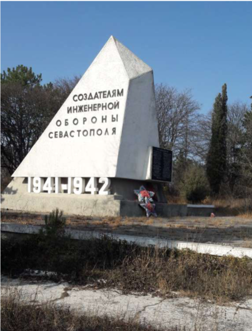
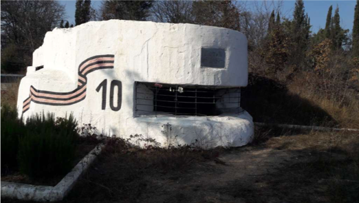
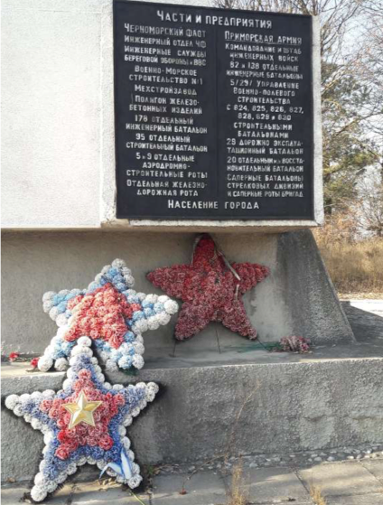
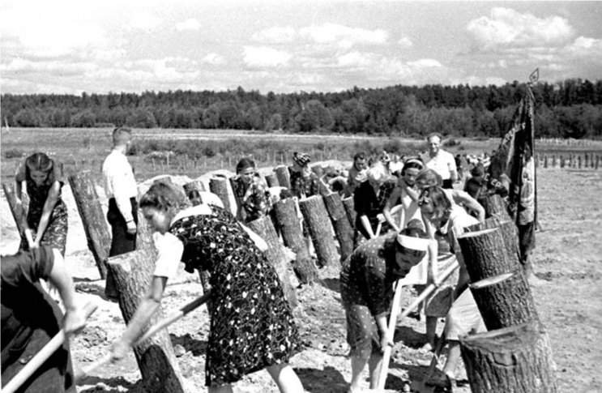
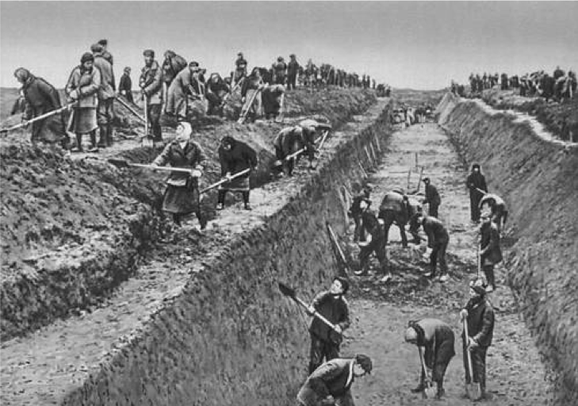

Памятник создателям инженерной обороны Севастополя
  
Представляет собой композицию из восьмиметрового обелиск в виде противотанкового надолба и ДОТа № 10. Идея памятника — незыблемость инженерного щита крепости. Памятник посвящен подвигу военных инженеров, создавших участии моряков, солдат и населения города систему оборонительных сооружений.
Весь Севастополь участвовал в строительстве оборонительных сооружений, изготовляли оружие и боеприпасы для фронта, оказывали помощь раненым.


Инженерные и строительные работы не прекращались весь период героической обороны под бомбежками и артобстрелми. Было построено 75 артиллерийских дотов, 474 пулеметных дота и дзота, оборудованы позиции 8 батарей, 252 командных и наблюдательных пункта, вырыто 31,5 км противотанковых рвов, 180 км траншей и ходов сообщения, 5700 землянок, 4134 блиндажа, создано 79 км проволочных заграждений, установлено 300000 противотанковых и противопехотных мин, построено 3 подземных госпиталя, 3 подземных убежища на 15000 человек, много других сооружений.
ДОТ №10 состоял из шести человек. Командовал гарнизоном дота старший сержант Б. Н. Пучин. В июне 1942 года весь гарнизон погиб 29 декабря 1941 года от попадания снаряда в амбразуру, и, по воспоминаниям, похоронен в 20-ти метрах.